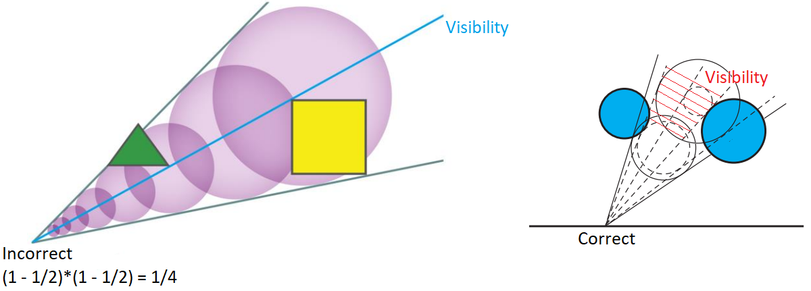

By "4.3 Overview" of [Jensen 2001] and "16.2.2 Photon Mapping" of PBR
Book V3, the photon mapping is composed of two steps: photon tracing
and rendering. During the photon tracing step, the photon
rays are traced from the light sources, and the lighting information of the interaction positions
of these photon rays is recorded as the photons. During the rendering step,
the primary rays are traced from the camera and the final gather rays are
traced from the final
gather points, and the lighting information of the vicinal photons of the interaction
positions of these primary rays or final gather rays is used to estimate the
lighting of these interaction points by (probability) density estimation.
By "7.5 Photon Gathering" of [Jensen 2001], [Hachisuka 2005] and "16.2.2 Photon
Mapping" of PBR
Book V3, the rendering step of the photon mapping is usually composed of two steps: radiance
estimate and final gathering. During the radiance estimate step,
the primary rays are traced from the camera, and the lighting information of the vicinal
photons of the interaction positions of these primary rays is used to estimate the lighting of
these interaction points by (probability) density estimation. During the final
gathering step, from some of the interaction positions of the primary rays, which
are called the final
gather points, the final gather rays are traced, and the lighting
information of the vicinal photons of the interaction positions of the final gather rays is
used to estimate the lighting of these interaction positions by (probability) density
estimation.
Photon Tracing
Rendering - Radiance-Estimate
Rendering - Final Gathering
By [Crassin 2011 B], the VXGI (Voxel Global Illumintaion) is composed of four steps:
voxelization, light injection, filtering and cone
tracing. The idea of the VXGI is intrinsically to implement the photon mapping by storing the
photons in the voxels. The light injection step of the VXGI is analogous to the photon tracing pass of the
photon mapping. The cone tracing of the VXGI is analogous to the rendering pass of the photon mapping.
Voxelization
Clipmap
TODO: by [McLaren 2015] and [Eric 2017], clipmap is better than SVO (sparse voxel octree).
Clipmap Logical Structure
[Panteleev 2014]: "CLIPMAP VS. MIPMAP"
Texture size (for zeroth mipmap level) is the same for all clipmap levels, which is called that
clipmap size
The voxel size increses
Only the last level has more than one mipmap levels (the logical volume remains the same within the same clipmap
level)
NVIDIA VXGI Implementation:
Logical Structure:
clipmap level 0-3: only one mipmap level
clipmap level 4: mipmap 0-5 (6 levels)
Physical Structure:
Texture3D 128*128*785
3D Texture Depth Index
Clipmap Level Index
Mipmap Index
Voxel Size
Texture Size (Voxel Count & 3D Texture Logical Width/Height)
1 - 128
0
0
8
128
131 - 258
1
0
16
128
261 - 388
2
0
32
128
391 - 518
3
0
64
128
521 - 648
4
0
128
128
651 - 714
4
1
256
64
717 - 748
4
2
512
32
751 - 766
4
3
1024
16
769 - 776
4
4
2048
8
779 - 782
4
5
4096
4
3D Texture Depth Index
3D Texture Equivalent Depth Index (Toroidal Address)
By Additive Interval Property, the
ambient occlusion can be calculated as kA=∫Ωπ1V(ωi)(cosθi)+dωi=π1i=0∑n(∫ΩiV(ωi)(cosθi)+dωi) where
n is the number of cones, and Ωi is the solid angle subtended by the ith cone.
By [Crassin 2011 B], the visibility V(ωi) is assumed to be the same for all
directions within the same cone, and the calculation of the ambient occlusion can be simplified as ∫ΩiV(ωi)(cosθi)+dωi≈Vc(Ωi)⋅∫Ωi(cosθi)+dωi where Vc(Ωi)=1−AFinal is the inverse of the final occlusion of the cone tracing.
By "5.5.1 Integrals over Projected Solid Angle" of PBRT-V3
and [Heitz 2017], the integral of the clamped cosine ∫Ωi(cosθi)+dωi can be calculated as the projected area on the unit disk.
By [Crassin 2011 B], the recursive form, which is similar to the "under operator" ([Dunn
2014]), can be used to calculated the final color CFinal and the final occlusion AFinal of the cone tracing.
The explicit form of the final color CFinal and the final occlusion AFinal of the cone tracing can proved by mathematical induction.
Prove AFinal(n+1)=1−i=0∏n(1−Ai) by mathematical induction
Basis
when n = 0 left=AFinal(1)=AFinal(0)+(1−AFinal(0))⋅A0=0+(1−0)⋅A0=A0 right=1−(1−A0)=0
left = right, the equation holds
Inductive step
we assume that the proposition holds for n = k
when n = k + 1 left=AFinal((k+1)+1)=AFinal(k+1)+(1−AFinal(k+1))⋅Ak+1=(1−i=0∏k(1−Ai))+(1−(1−i=0∏k(1−Ai)))⋅Ak+1=1−i=0∏k(1−Ai)−i=0∏k(1−Ai)⋅Ak+1=1−i=0∏k(1−Ai)(1−Ak+1)=1−i=0∏k+1(1−Ai) right=1−i=0∏k+1(1−Ai)
left = right, the equation holds
Prove CFinal(n+1)=i=0∑n⎝⎛ZjNearerZi∏(1−Aj)⎠⎞⋅Ci by mathematical induction
Basis
when n = 0 left=CFinal(1)=CFinal(0)+(1−AFinal(0))⋅C0=0+(1−0)⋅C0=C0 right=i=0∑0⎝⎛ZjNearerZi∏(1−Aj)⎠⎞⋅Ci=⎝⎛ZjNearerZ0∏(1−Aj)⎠⎞⋅C0=1⋅C0=C0
left = right, the equation holds
Inductive step
we assume that the proposition holds for n = k
when n = k + 1 left=CFinal((k+1)+1)=CFinal(k+1)+(1−AFinal(k+1))⋅Ck+1=i=0∑k⎝⎛ZjNearerZi∏(1−Aj)⎠⎞⋅Ci+(1−(1−i=0∏k(1−Ai)))⋅Ck+1=i=0∑k⎝⎛ZjNearerZi∏(1−Aj)⎠⎞⋅Ci+(i=0∏k(1−Ai))⋅Ck+1=i=0∑k⎝⎛ZjNearerZi∏(1−Aj)⎠⎞⋅Ci+⎝⎛ZjNearerZk+1∏(1−Aj)⎠⎞⋅Ck+1=i=0∑k+1⎝⎛ZjNearerZi∏(1−Aj)⎠⎞⋅Ci right=i=0∑k+1⎝⎛ZjNearerZi∏(1−Aj)⎠⎞⋅Ci
left = right, the equation holds
Evidently, by [McLaren 2015], the cone tracing may NOT dectect the full occlusion which is the result
of mutiple partial occlusions.
